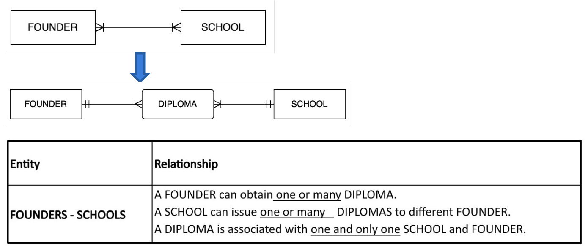
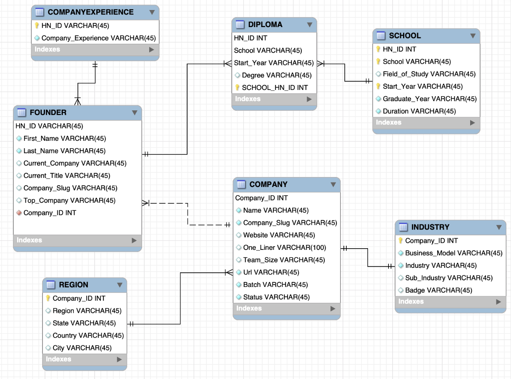

This project explores startups funded by Y Combinator by creating a structured SQL database that stores detailed information about each company — like where they’re based, what industry they’re in, and the backgrounds of their founders. By organizing and analyzing the data using SQL, we aim to answer questions such as: What kinds of founders tend to build successful startups? Are certain industries or locations more likely to produce active companies? The goal is to turn raw data into useful insights that could help investors, researchers, or anyone curious about the startup world better understand what drives success in the YC ecosystem.
This dataset could benefit several types of users:
The data for this project was sourced from the publicly available Kaggle dataset titled YCombinator: All Funded Companies. The dataset contains detailed information about companies funded by Y Combinator including founders, industries, regions, and prior experience.
Based on the original Kaggle dataset, eight CSV files were consolidated into six core entities through data wrangling in Excel: COMPANY, FOUNDER, REGIONS, INDUSTRY, COMPANY_EXPERIENCE, and SCHOOLS. Each entity represents a real-world concept relevant to the YC startup ecosystem and serves as the foundation of our conceptual schema.
Metadata was developed at both the entity and attribute level. Each table contains details such as attribute names, data types, allowed values, and example entries. This ensures data integrity, consistency, and clarity for SQL querying.
Relationships were mapped based on logical connections between entities. For example, a FOUNDER can attend many SCHOOLS, and each COMPANY belongs to one INDUSTRY. The business rules were formalized to reflect cardinality and data dependencies.
Originally, a many-to-many relationship existed between FOUNDER and SCHOOL. To normalize this relationship and better capture attributes such as degree type, a bridge entity DIPLOMA was introduced.
This relational schema shows how each entity was mapped into SQL tables, including attributes, data types, and primary/foreign key constraints. It reflects how the conceptual design was translated into an implementable database structure.
This stage transforms the conceptual model into a relational schema that can be implemented in SQL. Primary keys and foreign key relationships are defined to enforce referential integrity.
-- Query 1: Company Status Distribution
SELECT
Status,
COUNT(*) AS Count,
ROUND(COUNT(*) * 100.0 / (SELECT COUNT(*) FROM YCombinator.companies), 0) AS Percentage
FROM YCombinator.companies
GROUP BY Status
ORDER BY Count DESC;
-- Query 2: Top Industries by Active Companies
SELECT Industry, COUNT(companies.Company_ID) AS NoofCompanies
FROM my_schema3.companies
LEFT JOIN my_schema3.industries
ON companies.Company_ID = industries.Company_ID
WHERE Status <> "Inactive"
GROUP BY Industry
ORDER BY NoofCompanies DESC
LIMIT 5;
-- Query 3: Top Sub-Industries by Active Companies
SELECT Sub_Industry, COUNT(companies.Company_ID) AS NoofCompanies
FROM my_schema3.companies
LEFT JOIN my_schema3.industries
ON companies.Company_ID = industries.Company_ID
WHERE Status <> "Inactive"
GROUP BY Sub_Industry
HAVING Sub_Industry <> ""
ORDER BY NoofCompanies DESC
LIMIT 5;
-- Query 4: Top Schools of Founders (Non-Inactive Companies)
SELECT school, COUNT(school) AS cschool
FROM (
SELECT school.HN_ID, school.School
FROM school
JOIN (
SELECT companies.Company_ID, founders.HN_ID, companies.Slug, companies.Status, founders.First_Name, founders.Last_Name
FROM companies
RIGHT JOIN founders ON companies.Slug = founders.Company_Slug
WHERE companies.Status <> 'Inactive'
ORDER BY companies.Company_ID
) AS founder_noninactive_t ON school.HN_ID = founder_noninactive_t.HN_ID
ORDER BY HN_ID
) AS noninactive_school_t
GROUP BY school
ORDER BY cschool DESC
LIMIT 5;
-- Query 5: Top Regions and Countries with Active Companies
SELECT
CASE
WHEN region.Region IS NULL OR region.Region = '' THEN 'Unknown'
ELSE region.Region
END AS Region,
CASE
WHEN region.Country IS NULL OR region.Country = '' THEN 'Unknown'
ELSE region.Country
END AS Country,
COUNT(companies.Company_ID) AS Num_Companies
FROM final_project_schema.region
LEFT JOIN final_project_schema.companies
ON region.Company_ID = companies.Company_ID
WHERE companies.Status <> "Inactive"
GROUP BY Region, Country
ORDER BY Num_Companies DESC
LIMIT 10;
-- Query 6: Top Company Experience Backgrounds Among Founders
SELECT company_experience.Company, COUNT(founders.HN_ID) AS Num_Founders
FROM company_experience
JOIN founders ON company_experience.HN_ID = founders.HN_ID
JOIN (
SELECT companies.Company_ID, companies.Slug
FROM companies
WHERE companies.Status <> 'Inactive'
) AS active_companies ON founders.Company_Slug = active_companies.Slug
GROUP BY company_experience.Company
ORDER BY Num_Founders DESC
LIMIT 10;